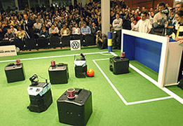
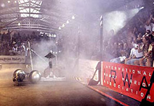

Die Idee, dass Roboter Fußball spielen, wurde zum ersten Mal 1992 von Prof. Alan Mackworth(Kanada), in seiner Abhandlung "On Seeing Robots" erwähnt. Unabhängig davon organisierte eine jap. Forschungsgruppe 1992 in Tokyo einen Kongress zum Thema "Künstliche Intelligenz", wo Ähnliches erörtert wird. Ab 1996 existiert der Robo-Cup, dessen letztendliches Ziel der Wettkampf Mensch gegen Roboter ist, was heute noch unrealistisch ist. Marc Thorpe, San Francisco, gilt als Vater der "Robot-Kriege". Er baute die ersten Roboter, die wettbewerbsmäßig gegeneinander "Krieg führten". Ursprünglich wollte er Roboter bauen, die radiogesteuert staubsaugen und Hausarbeit erledigen. Thorpe scheiterte und montierte stattdessen Kettensägen u.a. auf den Robotern. Heute sind "Robot-Wars" ein fixer und publikumsträchtiger Bestandteil von TV-Programmen. 1992 "gründet" Nicolas Anatol Baginsky in Deutschland seine Roboter-Band "The Three Sirens", bestehend aus einem Gitarren-Roboter, einem Bass-Roboter und einem winzigen "Schlagzeuger", der auch mitfilmt. Die Roboter improvisieren frei, "hören" aufeinander und reagieren auf das Gehörte. Baginsky verwendet "Neuronale Netze", Softwarestrukturen, die seine Geschöpfe selbständig handeln lassen.